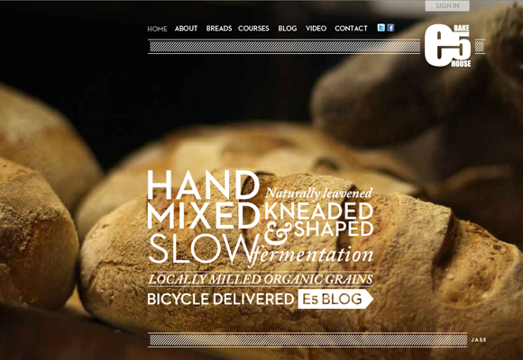
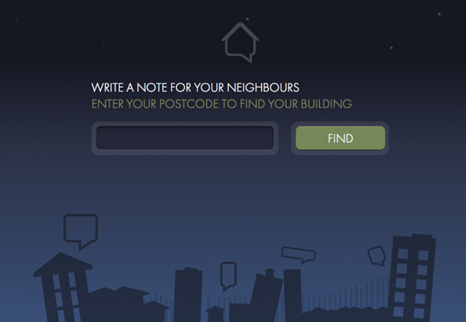
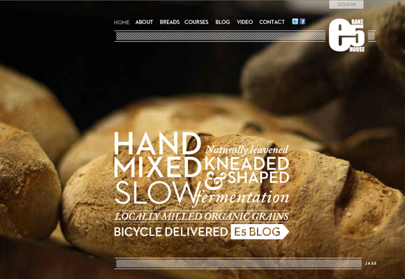
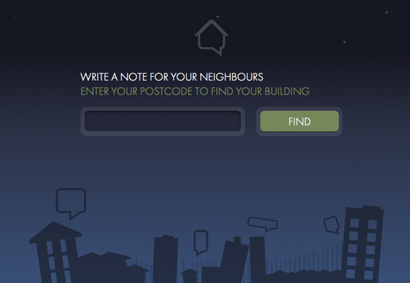

- Ravensbourne
- Graduates 2011
- Product Design
- Interaction Design
- Jason Cooper
- BA (Hons) Product Design
- "In my head, I'm Mr Wolfe. I solve problems."
 



- Your Mother
- A mother is a living, breathing ingredient used when baking sourdough breads. A simple blend of water and flour left over time to ferment and bubble. Many sourdough Mothers are older than the bakers themselves, some reaching the age of 200 years. Collaborating with E5 Bakehouse, a bakery in Hackney, London, we explored potential product opportunity areas. As well
as developing E5 Bakehouse’s web presence, YOUR MOTHER looks to encourage others to bake by communicating the story and process involved when growing your own mother.
- Neighbour Note
- NeighbourNote.co.uk is an online notice board that connects neighbours within shared resident buildings. It’s goal, by creating a form of communication for residents is to strengthen communities and improve security. NeighbourNote.co.uk is built using Ruby on Rails and is currently being tested on a shared resident building in Whitechapel, London.